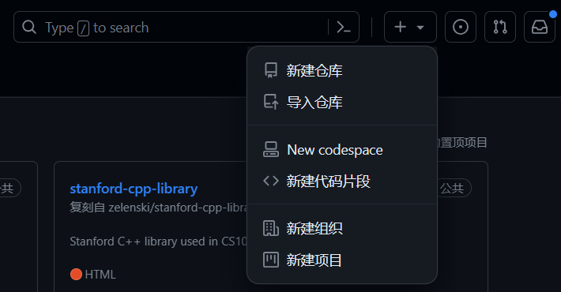
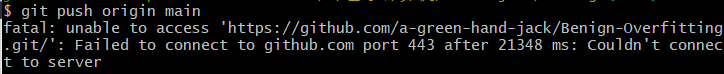

利用git实现本地文件和远程仓库的同步
我的场景—本地文件夹有内容
步骤一:创建一个新的GitHub仓库
- GitHub网站上登陆账号
- 点击右上角加号图标,选择"New repository"
 - 输入仓库名称,描述,并设置为公有或者私有
有一点值得指出,这里建立的仓库最好先不要建立"BEADME"和许可证文件,具体原因后文再说
步骤二:初始化本地文件夹为Git仓库
在本地文件夹中右键打开Git Brash
或者可以在任何地方打开Git Brash,然后使用cd D:\xxx\xxx\xxx进入本地文件
然后初始化Git仓库并且把它连接到远程的GitHub仓库:
1 | git init # 这个命令运行之后会在根目录中看到一个".git"文件夹 |
然后添加文件:
1 | git add . # 把本地的文件都先加载到缓冲区 |
然后设置本次操作的说明:
1 | git commit -m "你的操作说明,比如:第一次上传本地文件" |
选择分支,这里要和GitHub中的对应上:
1 | git branch -M main # 也可以是是master |
如果不小心搞错了分支,可以使用一下命令换回:
1 | git branch -m master main # 从分支master换到main |
然后连接远程仓库:
1 | git remote add origin https://github.com/<GitHub用户名>/<仓库名称>.git |
这里,因为我们在本地有文件,并且我一开始犯了一个错误,就是建立了README和许可证文件,所以操作会比较麻烦.
首先,把远端仓库拉取到本地,并且允许合并不相关的历史
1 | git pull origin main --allow-unrelated-histories |
然后,把本地的变更推送到远程仓库:
1 | git push origin main |
这样的操作会导致合并的历史不太整洁,不过我们这里还只是创建,所以影响不大.同时,最好关掉你的VPN,如果开启可能会出现"fatal: unable to access 'https://github.com/a-green-hand-jack/Benign-Overfitting.git/': Recv failure: C onnection was reset"这样的报错,这说明你在同步的时候遇到了一些网络问题.

很好,如果一切顺利,这个时候你就应该实现了本地和远程的同步!
使用ssh协议推送和拉取代码
正如前文所述的那样,pull和push的时候,为了网络的稳定,最好关闭VPN.但是有的时候,登录GitHub网页又需要使用VPN,如果反复的关闭,连接就很麻烦.这个时候可以考虑使用ssh协议,这可以提高推送和拉取时的稳定性.
假设已经有了一个ssh密钥
在git中切换到ssh协议进行操作,首先验证一下是否能够连接:
1 | ssh -T git@github.com |
然后,使用git remote修改远程仓库的URL:
1 | git remote set-url origin git@github.com:<用户名>/<仓库名>.git |
最后,只要像之前一样的pull和push就好了:
1 | git pull origin main |
检查之前建立的密钥
首先检查一下现有的密钥,在git里面:
1 | ls ~/.ssh |
这样会列出C:\Users\XXX\.ssh文件中的所有的密钥
然后,我们可以检查一下现有的公钥的内容,如果你的git打开的位置不在C:\Users\XXX\.ssh文件夹下,请先转到对应的位置:
1 | cd C:Users/XXX/.ssh |
然后,就可以打开公钥查看了:
1 | cat ~/.ssh/id_rsa.pub |
请注意，SSH 密钥是敏感信息，私钥应当保密并妥善保存。不要在不受信任的地方公开或共享您的私钥。如果您怀疑私钥可能已经泄露，应当立即生成新的密钥对。
生成新的密钥
在git中输入以下命令来生成新的SSH密钥对:
1 | ssh-keygen -t rsa -b 4096 |
这将生成一个新的 RSA 密钥对，默认情况下保存在 ~/.ssh/id_rsa（私钥）和 ~/.ssh/id_rsa.pub(公钥)
然后输入以下内容来查看生成的公钥的内容
1 | cat ~/.ssh/id_rsa.pub |
复制生成的公钥内容，确保复制的内容是完整的公钥格式。
将公钥内容粘贴到您希望使用 SSH 密钥进行身份验证的地方，例如 GitHub 或其他远程服务器。
请注意，生成新的密钥对会替代之前的密钥，因此在更新密钥时，您需要更新相应的授权设置，例如 GitHub 上的 SSH 密钥设置.
忽略程序运行中的大文件
有时候,我们编辑的虽然是.py或者.ipynb之类的文本文件,但是文件运行的过程中会产生一些很大的文件,这些部分有时候是不用上传的,我们有好几种方法来忽略它
在 .gitignore 文件中排除文件
在您的项目根目录下创建一个名为 .gitignore 的文件，然后在文件中添加一行 cifar-10-python.tar.gz这将告诉 Git 忽略这个文件，不将其纳入版本控制.
如果你需要忽略位于深层文件夹内的文件，可以在 .gitignore 文件中使用相对路径或通配符来指定这些文件。以下是一些示例：
- 相对路径：
假设你的大文件位于 path/to/your/large_file.txt，而你希望忽略它，可以在 .gitignore 文件中添加相对路径:
1 | path/to/your/large_file.txt |
- 通配符：
如果你需要忽略某个文件夹内的所有内容，可以使用通配符 *。例如，如果你希望忽略 path/to/your/large_folder 内的所有文件，可以这样写：
1 | path/to/your/large_folder/* |
- 递归通配符：
如果你需要递归地忽略某个文件夹及其子文件夹内的所有内容，可以使用双星号 **。例如，如果你希望忽略 path/to/your/large_folder 及其子文件夹内的所有内容，可以这样写：
1 | path/to/your/large_folder/** |
这会将 large_folder 内的所有内容及其子文件夹都排除在版本控制之外.
使用这些方法，你可以在 .gitignore 文件中指定你想要忽略的深层文件夹内的文件。Git 将会自动忽略这些文件，确保它们不会被纳入版本控制.
说明文件结构
在 .gitignore 文件中，使用的是相对于根目录的相对路径。所以，如果你的项目根目录是 D:/XXX/YYY/ZZZ，那么在 .gitignore 文件中指定 path/to/your/large_folder实际上是指定相对于根目录的路径。
具体而言，如果你的项目结构如下：
1 | D:/XXX/YYY/ZZZ/ |
那么在 .gitignore 文件中的路径应该是相对于根目录的路径，如下所示：
1 | path/to/your/large_folder/ |
这将会忽略 large_folder 及其内部的所有文件